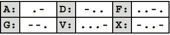
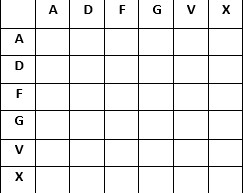
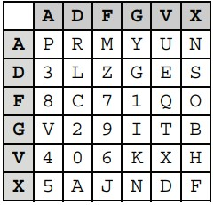
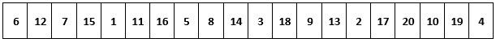
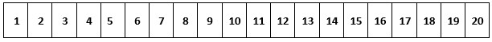
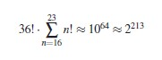
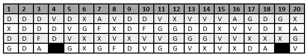
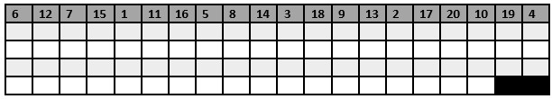
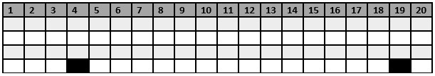

Rozdzial 6.2#
OPIS DZIAŁANIA#
SZYFROWANIE#
Początkowo szyfr ADFGVX był nazywany GEDEFU 18 ( GEheimschrift DEr FUnker 1918 , „szyfr operatorów radiotelegraficznych 18”). Jego obecnie używana nazwa pochodzi od używanych liter: A, D, F, G, V, X. Dlaczego akurat takich ? Ponieważ gdy przedstawimy je w kodzie Morse’a zobaczymy iż bardzo się od siebie różnią, dzięki czemu podczas odbioru transmisji radiowej łatwiej było uniknąć błędów. Poniżej pokazane są litery i ich odpowiedniki w kodzie Morse’a:

Tablica_1: ADFGVX - kod Morse’a
Przejdźmy teraz do działania szyfu.
Szyfrowanie składa się z fazy podstawienia oraz fazy transpozycji.
Faza podstawienia polega na użyciu szachownicy Polibiusza 6 x 6, która umożliwia szyfrowanie wszystkich 26 liter alfabetu oraz dziesięciu cyfr: od 0 do 9. Bierzemy szachownicę Polibiusza:

Tablica_2: Pusta szachownica Polibiusza
A następnie wypełniamy ją literami alfabetu i cyframi od 0 do 9 zmieniając ich kolejność, która będzie znana tylko przez nadawcę i odbiorcę wiadomości.
Poniżej przedstawiony jest przykład szachownicy Polibiusza obowiązujący na froncie wschodnim od 7 do 9 listopada 1918 roku:

Tablica_3: Szachownica Polibiusza obowiązująca na froncie wschodnim 7-9.11.1918
Następnie każdą literę lub cyfrę z tekstu jawnego zastępujemy parą symboli z ADFGVX zgodnie z szachownicą Polibiusza, przy czym pierwszy symbol ADFGVX reprezentuje wiersz, a drugi kolumnę. Tworzymy w ten sposób tekst tymczasowy.
Kolejnym krokiem jest przejście do fazy transpozycji, w której to stosowana jest transpozycja kolumnowa do otrzymanego tekstu tymczasowego. Do tego będzie nam potrzebny ustalony wcześniej klucz transpozycji. Dla przykładu pokażemy poniżej klucz transpozycji obowiązujący w dniach od 7 do 9 listopada 1918 roku:

Tablica_4: Klucz transpozycji wykorzystywany 7-9.11.1918
Tworzymy tablicę pośrednią, którą uzupełniamy w następujący sposób: pierwszy wiersz uzupełniamy kluczem transpozycji, kolejne wiersze uzupełniamy naszym tekstem tymczasowym. Czasami zdarza się że nasz ostatni wiersz w tabeli będzie niekompletny. Gdy już mamy gotową tablicę tymczasową należy zmienić położenie jej kolumn (transponować kolumny) tak aby w pierwszym wierszu tabeli kolumny były posortowane rosnąco:

Tablica_5: Posortowany klucz transpozycji (pierwszy wiersz tablicy tekstu zaszyfrowanego)
W ten sposób otrzymujemy tabelę tekstu zaszyfrowanego, z której wyodrębniamy ostateczny tekst zaszyfrowany odczytując kolejno kolumna po kolumnie od góry do dołu. W ten sposób otrzymujemy tekst zaszyfrowany.
ODSZYFROWANIE#
Aby odszyfrować tekst zaszyfrowany należy wykonać przedstawione wcześniej kroki szyfrowania w odwrotnej kolejności.
Najpierw przygotowujemy pustą tablicę pośrednią, uzupełniając jej pierwszy wiersz kluczem transpozycji. Dodatkowo znając długość tekstu zaszyfrowanego możemy określić które komórki w ostatnim wierszu tabeli będą puste.
Kolejnym krokiem jest utworzenie pustej tablicy tekstu zaszyfrowanego i zaznaczenie na podstawie utworzonej wcześniej tablicy pośredniej odpowiednich pustych komórek. Możemy teraz uzupełnić tablicę tekstem zaszyfrowanym kolumna po kolumnie od góry do dołu.
Przechodzimy do odwrotnej transpozycji na kolumnach uzupełnionej tablicy tekstu zaszyfrowanego (zmieniamy położenie kolumn tak aby w ppierwszym wierszu wartości były ułożone rosnąco), tak aby otrzymać tablicę pośrednią, z której wyodrębnimy tekst tymczasowy. (odczytujemy go z tablicy po wierszach od lewej do prawej).
Odczytany tekst tymczasowy dzielimy na pary symboli ADFGVX i zamieniamy każdą parę na odpowiednią literę lub cyfrę tekstu jawnego zgodnie z wykorzystywaną wcześniej ustaloną szachownicą Polibiusza.
ANALIZA ROZMIARU PRZESTRZENI KLUCZA#
Klucz ADFGVX skłąda się z dwóch elementów. Jednym z nich jest szachownica podstawienia Polibiusza, drugim natomiast jest klucz transpozycji.
Liczba możliwych unikalnych kluczy podstaiwenia wyniso 36!. Natomiast liczba unikalnych kluczy transpozycji zmienia się w zależności od długości klucza.
Analizując odzyskane klucze można stwierdzić że wśród nich najkrótszy klucz transpozycji skladał się z 16 elementów, natomiast najdłuższy z 23 elementów.
Dzięki temu możemy wywnioskować, że rozmiar przestrzeni kluczy ADFGVX wynosi:

PRZYKŁAD#
SZYFROWANIE#
Teraz pokażemy przykład szyfrowania ADFGVX korzystając z oryginalnej wiadomości z listopada 1918 roku:
FUERxLEGATIONxALLEMANDExKONSTANTINOPELx
Bierzemy pierwszą literę naszego tekstu jawnego (w tym przypadku F) i lokalizujemy ją w kwadracie Polibiusza (w naszym przykładzie skorzystamy z przedstawionego wcześniej kwadratu Polibiusza wykorzystywanego od 7 do 9 listopada 1918 roku). F znajduje się ona na przecięciu wiersza X i kolumny X. Dlatego zamiast litery F napiszemy teraz parę liter XX. Analogicznie postępujemy z pozostałymi literami tekstu jawnego otrzymując następujący tekst tymczasowy:
XX AV DV AD VV DD DV DG XD GV GG FX XG VV XD DD DD DV AF XD XG XV DV VV VG FX XG DX GV XD XG GV GG XG FX AA DV DD VV
Kolejnym krokiem jest zastosowanie klucza transpozycji do stworzenia tablicy pośredniej. W naszym przykładzie skorzystamy z wcześniej przedstawionego klucza (wykorzystywanego w dniach od 7 do 9 listopada 1918 roku) i otrzymamy:
Tablica_1: Tablica pośrednia
Teraz przechodzimy do transpozycji (zmiany położenia) kolumn w tabeli. Kolumna pierwsza zostaje przeniesiona do kolumny 6, druga do 12 i pozostałe analogicznie. Otrzymamy tablicę tekstu zaszyfrowanego:

Tablica_2: Tablica tekstu zaszyfrowanego
Z otrzymanej tablicy odczytujemy kolumna po kolumnie od góry do dołu: DXDG, następnie DDDD i tak do ostatniej kolumny włącznie. Oto nasz ostateczny tekst zaszyfrowany:
DX DG DD DD DD FA VD DD VV GX GX XA FX GV XV FD DX DD FV VV GV GX GG GV DG VV DG XV XV VA VV XG VX DD DX AG XX XA GV
DESZYFROWANIE#
Naszym tekstem zaszyfrowany będzie tekst, który otrzymaliśmy w powyższym przykładzie szyfrowania:
DX DG DD DD DD FA VD DD VV GX GX XA FX GV XV FD DX DD FV VV GV GX GG GV DG VV DG XV XV VA VV XG VX DD DX AG XX XA GV
W pierszym etapie przygotowujemy pustą tablicę pośrednią, uzupełniamy jej pierwszy wiersz kluczem transpozycji (wykorzystywanego w dniach od 7 do 9 listopada 1918 roku):

Tablica_3: Pusta tablica pośrednia
Teraz tworzymy pustą tablicę tekstu zaszyfrowanego:

Tablica_3: Pusta tablica tekstu zaszyfrowanego
Tak przygotowaną tabelę uzupełniamy tekstem zaszyfrowanym kolumna po kolumnie od góry do dołu:
Tablica_4: Tablica tekstu zaszyfrowanego
Tablicę pośrednią przekształcamy tak aby otrzymać tablicę pośrednią:
Tablica_5: Tablica pośrednia
Aby otrzymać tekst tymczasowy odczytujemy go z tablicy pośredniej po wierszach od lewej do prawej:
XX AV DV AD VV DD DV DG XD GV GG FX XG VV XD DD DD DV AF XD XG XV DV VV VG FX XG DX GV XD XG GV GG XG FX AA DV DD VV
Tekst tymczasowy dzielimy na pary symboli ADFGVX i zamieniamy na odpowiednie litery lub cyfry tekstu jawnego zgodnie z wcześniej przyjętą szachownicą Polibiusza (w naszym przykładzie z szachownicy Polibiusza wykorzystywanej od 7 do 9 listopada 1918 roku) i otrzymujemy tekst jawny:
FUERXLEGATIONXALLEMANDEXKONSTANTINOPELX